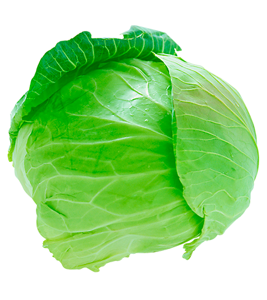

Кабачок (уменьш. от укр. кабак, «тыква», из тюркских языков)
— кустовая разновидность тыквы обыкновенной
с продолговатыми плодами, без плетей. Плоды могут быть зелёного,
жёлтого, чёрного или белого цвета.
Мякоть нежная и быстроваркая, употребляется также
и в сыром виде (в салатах).
Лук (лат. Állium) — род двулетних и многолетних
травянистых растений, относимых к подсемейству Луковые
(Alliaceae) семейства Амариллисовые (Amaryllidaceae)
порядка Спаржецветные (Asparagales) (ранее относили к
лилейным).

Капу́ста огоро́дная (лат. Brássica olerácea) —
двулетнее растение, сельскохозяйственная культура;
вид рода Капуста (лат. Brassica) семейства Капустные (Крестоцветные).

Баклажан, или Паслён темноплодный (лат. Solánum melongéna)
— вид многолетних травянистых растений рода
Паслён (Solanum). Известен также под названием бадриджан
(редко бубриджан), а в южных районах России и
Украины баклажаны называют синенькими (ед. ч. си́ненький).

Перец стручковый(лат. Cápsicum ánnuum) — вид однолетних
травянистых растений рода Capsicum семейства
Паслёновые (Solanaceae), или его плоды.
Сельскохозяйственная овощная культура.
Сорта перца стручкового делят
на сладкие и горькие.
Последним, известным как красный перец, острый вкус
придаёт алкалоид капсаицин.
Разновидности с плодами сладкого вкуса — перец сладкий.
Существует множество сортотипов, например, перец
болгарский.

Латук посевной, или Салат латук (лат. Lactūca sātiva) —
вид однолетних травянистых растений рода Латук
семейства Астровые (Asteraceae).
Кабачок (уменьш. от укр. кабак, «тыква», из тюркских языков) —
кустовая разновидность тыквы обыкновенной
с продолговатыми плодами, без плетей. Плоды могут
быть зелёного, жёлтого, чёрного или белого цвета.
Мякоть нежная и быстроваркая, употребляется также
и в сыром виде (в салатах).
Лук (лат. Állium) — род двулетних и многолетних
травянистых растений, относимых к подсемейству Луковые
(Alliaceae) семейства Амариллисовые (Amaryllidaceae)
порядка Спаржецветные (Asparagales) (ранее относили к
лилейным).
Капу́ста огоро́дная (лат. Brássica olerácea) — двулетнее
растение, сельскохозяйственная культура; вид
рода Капуста (лат. Brassica) семейства Капустные (Крестоцветные).